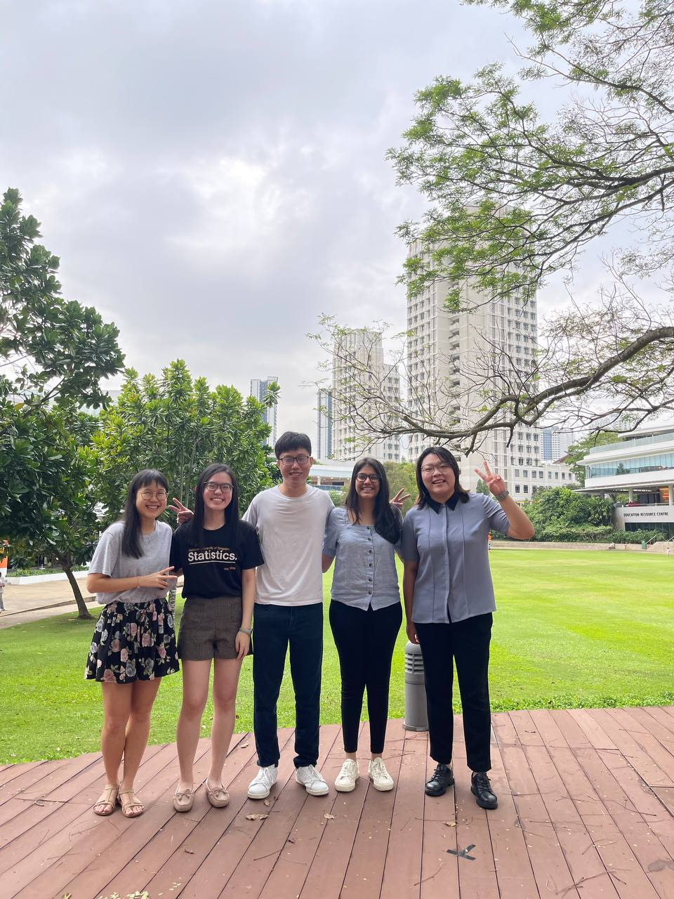
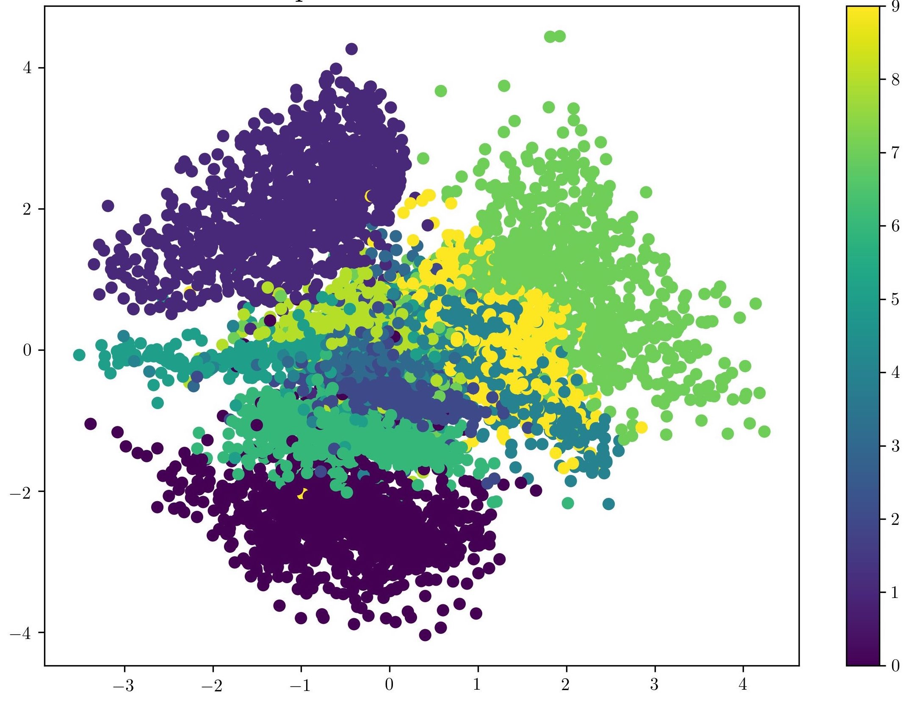
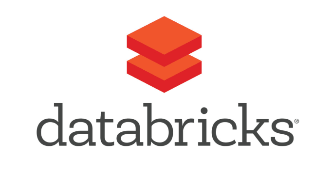
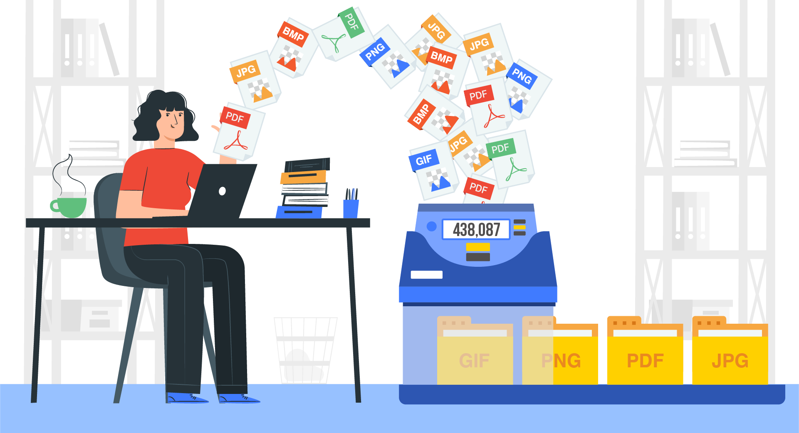
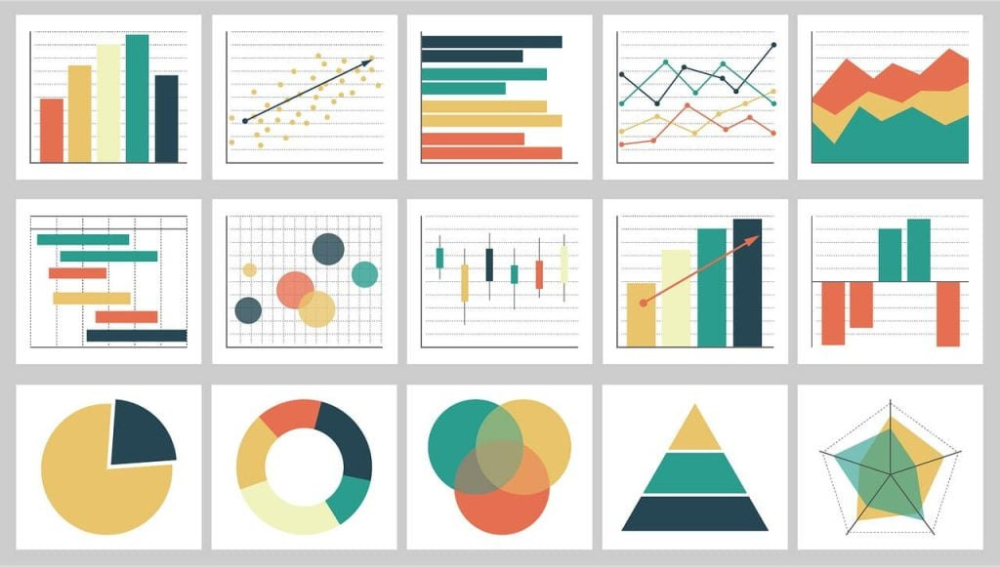

Ananya Gupta
Hello, I'm Ananya.
I work as a Data Scientist
I turn messy, real-world data into models, pipelines and dashboards that people actually use: from LLM document extraction at a fintech start-up to forecasting and ETL automation at OCBC Bank. NUS Data Science & Analytics graduate based in Singapore.
- Open to Data Science & AI roles
- Singapore
- B.Sc. (Hons) NUS
- Dean's List
What role are you hiring for?
Pick one and the whole page highlights the experience, projects and skills that matter for it.
A data scientist with both modelling and engineering skills
I've worked across the full data lifecycle: ingesting and cleaning raw data, building pipelines, training ML and NLP models, and presenting results to stakeholders through dashboards.
- Industry experience in banking (OCBC), fintech (Warden) and marketing analytics SaaS (Nugit)
- Hands-on with LLMs, NLP, computer vision and classical ML in Python
- Measurable impact: 200% pipeline efficiency gain and a 91% client renewal rate
Why I fit a Data Scientist role
I frame business questions as modelling problems and carry them through to a decision.
- Built statistical forecasting and time-series correlation models at OCBC to track performance against targets
- Built a multimodal scam-detection model (0.964 accuracy) using image and text features
- Built an agent-based simulation to test how product changes affect e-commerce engagement
- Coursework in Statistical Modelling, Machine Learning and Data Modelling & Computation
Why I fit an ML / AI Engineer role
I've built LLM features for a real product and experimented with deep learning architectures in research projects.
- Built an LLM pipeline at Warden to extract and summarise financial information from long documents, enriched with market-data APIs
- Trained GPT-2 variants to measure how AI-generated explanations improve natural language inference (accuracy, F1, BLEU)
- Compared RNN, LSTM, GRU and Transformer models for text summarisation; implemented Variational Autoencoders
- Packaged work with Docker, Node.js and TypeScript for end users
Why I fit a Data Engineer role
I like making data reliable, fast and well-modelled before anyone builds on it.
- Automated ETL with Python, SQL, VBA and SAS at OCBC, improving pipeline efficiency by 200%
- Designed database schemas and data dictionaries to standardise a data mart
- Big-data projects with Hadoop MapReduce and Spark ML; built a PostgreSQL crowdfunding database
- Experience with AWS, Firebase, Fivetran and NoSQL platforms
Why I fit a Data / BI Analyst role
I build dashboards and reports that help people make decisions, and I make sure the numbers in them are correct.
- Delivered end-to-end Tableau dashboards for OCBC's wealth and digital segments
- Automated client reports for J&J Vision and Kellogg's using Tableau and R at Nugit
- Data-quality checks contributed to a 91% client renewal rate; resolved 100+ data issues raised by users
- Data visualisation work in R and Python (Matplotlib, Seaborn)
Matching items below are outlined in pink; unrelated ones fade.
Experience
Click a role to expand the details.
Data / ML Intern @ Warden
Jan 2024 – Mar 2024
- Built an LLM-powered pipeline in TypeScript to extract and summarise key financial information (tax details, stock holdings) from long documents, enriched with AlphaVantage and Xignite market-data APIs to generate recommendations.
- Developed the user-facing interface with Node.js, Yarn and Docker so extracted information synced seamlessly for end users.
Data Science Intern @ OCBC Bank
May 2023 – Dec 2023
- Designed statistical forecasting and time-series correlation models on historical data to track performance against targets, accelerating performance reviews and decision-making.
- Automated ETL workflows with Python, SQL, VBA and SAS, improving pipeline efficiency by 200% and raising the accuracy of global metrics in the enterprise data warehouse.
- Defined database schemas and data dictionaries to standardise reporting structures and key metrics across the data mart.
- Delivered end-to-end Tableau dashboards, from data ingestion to real-time visualisations, for the wealth and digital segments.
- Recognised by department heads for product ideation and prototyping at the FRANKPreneurship Design Thinking Hackathon 2023.
Data Analysis & Operations Intern @ Nugit
Dec 2021 – Jul 2022
- Turned raw CSV files and API feeds into automated, interactive reports for enterprise clients including J&J Vision and Kellogg's using Tableau and R.
- Contributed to a 91% client renewal rate through daily data cleaning and back-end/front-end accuracy checks on the NLP- and AI-based ingestion platform.
- Partnered with Product and Engineering to troubleshoot bugs and ship custom metrics using SQL and Java; resolved 100+ user data issues via Intercom and email.
Projects
Filter by area. Every project links to its code and, where available, a write-up.





Hadoop MapReduce for Top-k Words
MapReduce job to compute the most frequent words on large text data.

Data Visualisations in R
A collection of exploratory and explanatory visualisations built in R.
AI Game of Chess
Search-based AI agents for path-finding, goal-finding and adversarial chess play.
2-Factor Authentication Password Manager
Securely stores and auto-fills passcodes with a single click.
Skills Explorer
Click any skill to see where I've used it.
ML & AI
Programming
Data Engineering & Cloud
Analytics & Visualisation
Select a skill above to see the evidence.
Education & Leadership
National University of Singapore
B.Sc. (Hons) Data Science & Analytics · 2020–2024
- Second Major in Innovation and Design
- Dean's List (AY2023/24 Sem 1); Academic Bursary Award 2021
- Machine Learning, AI, NLP, Statistical Modelling, Big Data Systems, Data Structures & Algorithms, Data Visualisation
NUS Statistics & Data Science Society
Vice President · Apr 2021–Apr 2024
- Judged and led the Annual Data Analytics Competition for 800+ students from NUS and other universities
- Organised industry events with Grab, AI Singapore and Shopee
- Managed cross-functional teams with the President and NUS Statistics Department
Languages & More
Communication
- English (Fluent), Hindi (Fluent), Mandarin (Intermediate)
- Marketing Director, NUS GRC Group
- FRANKPreneurship Design Thinking Hackathon 2023 (OCBC)